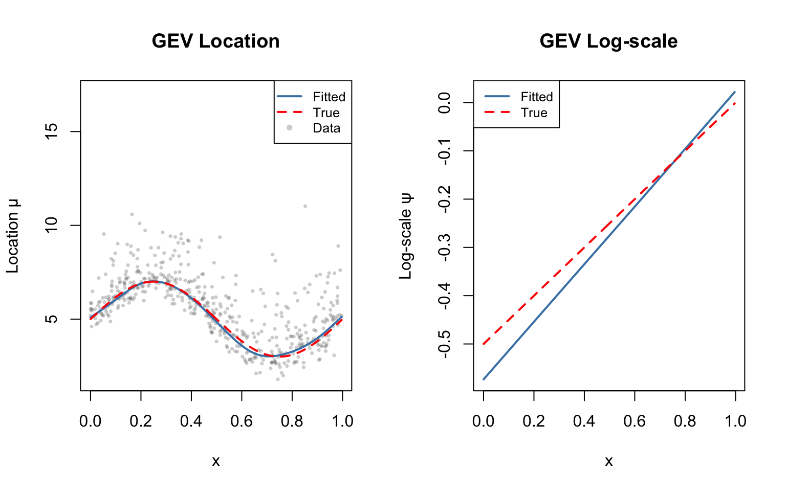
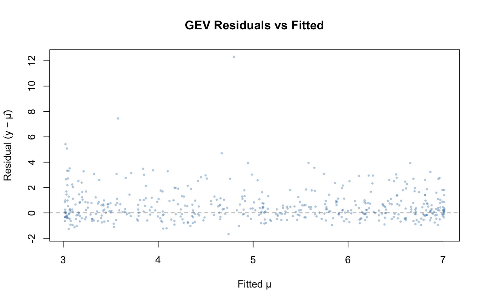
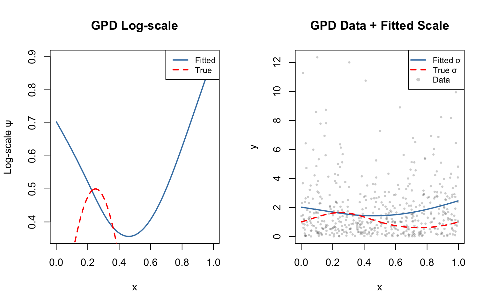
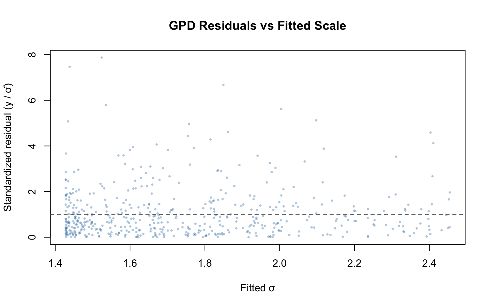

library(evgam)
library(mgcv)Loading required package: nlmeThis is mgcv 1.9-3. For overview type 'help("mgcv-package")'.This vignette demonstrates extreme value GAMs using the R evgam package, fitting the same simulated data as the Julia vignette for comparison.
library(evgam)
library(mgcv)Loading required package: nlmeThis is mgcv 1.9-3. For overview type 'help("mgcv-package")'.We load the same data as the Julia vignette: block maxima with covariate-dependent location and scale.
dat_gev <- read.csv("../data_gev.csv")
n <- nrow(dat_gev)
x <- dat_gev$x
y_gev <- dat_gev$y
mu_true <- 5 + 2 * sin(2 * pi * x)
logsigma_true <- -0.5 + 0.5 * x
sigma_true <- exp(logsigma_true)
xi_true <- 0.1
summary(dat_gev) y x
Min. : 1.789 Min. :0.0002389
1st Qu.: 4.167 1st Qu.:0.2320806
Median : 5.697 Median :0.4803411
Mean : 5.604 Mean :0.4895690
3rd Qu.: 6.783 3rd Qu.:0.7433844
Max. :17.110 Max. :0.9965527 In R evgam, we specify a list of formulas—one per distribution parameter.
m_gev <- evgam(
list(y ~ s(x, k = 10, bs = "cr"), # location μ(x)
~ s(x, k = 8, bs = "cr"), # log-scale ψ(x)
~ 1), # shape ξ (constant)
data = dat_gev,
family = "gev"
)
summary(m_gev)
** Parametric terms **
location
Estimate Std. Error t value Pr(>|t|)
(Intercept) 5.04 0.04 127.88 <2e-16
logscale
Estimate Std. Error t value Pr(>|t|)
(Intercept) -0.28 0.04 -7.22 2.68e-13
shape
Estimate Std. Error t value Pr(>|t|)
(Intercept) 0.14 0.04 3.98 3.39e-05
** Smooth terms **
location
edf max.df Chi.sq Pr(>|t|)
s(x) 7.54 9 1574.86 <2e-16
logscale
edf max.df Chi.sq Pr(>|t|)
s(x) 1.02 7 21.24 4.41e-06mu_hat <- predict(m_gev)$location
psi_hat <- predict(m_gev)$logscale
xi_hat <- coef(m_gev)
cat("Location fitted range:", range(mu_hat), "\n")Location fitted range: 3.017471 7.014204 cat("Location true range:", range(mu_true), "\n")Location true range: 3.000021 6.999916 cat("Correlation (location):", cor(mu_hat, mu_true), "\n")Correlation (location): 0.9957934 cat("Log-scale fitted range:", range(psi_hat), "\n")Log-scale fitted range: -0.5732695 0.02187721 cat("Log-scale true range:", range(logsigma_true), "\n")Log-scale true range: -0.4998806 -0.00172366 cat("Correlation (log-scale):", cor(psi_hat, logsigma_true), "\n")Correlation (log-scale): 0.9999996 rmse_mu <- sqrt(mean((mu_hat - mu_true)^2))
rmse_psi <- sqrt(mean((psi_hat - logsigma_true)^2))
cat("RMSE (location):", round(rmse_mu, 3), "\n")RMSE (location): 0.13 cat("RMSE (log-scale):", round(rmse_psi, 3), "\n")RMSE (log-scale): 0.039 ord <- order(x)
x_sorted <- x[ord]
par(mfrow = c(1, 2))
plot(x, y_gev, col = adjustcolor("grey40", alpha.f = 0.3), pch = 16, cex = 0.5,
xlab = "x", ylab = "Location μ", main = "GEV Location")
lines(x_sorted, mu_hat[ord], col = "steelblue", lwd = 2)
lines(x_sorted, mu_true[ord], col = "red", lty = 2, lwd = 2)
legend("topright", legend = c("Fitted", "True", "Data"),
col = c("steelblue", "red", adjustcolor("grey40", 0.3)),
lty = c(1, 2, NA), pch = c(NA, NA, 16), lwd = c(2, 2, NA), cex = 0.8)
plot(x_sorted, psi_hat[ord], type = "l", col = "steelblue", lwd = 2,
xlab = "x", ylab = "Log-scale ψ", main = "GEV Log-scale")
lines(x_sorted, logsigma_true[ord], col = "red", lty = 2, lwd = 2)
legend("topleft", legend = c("Fitted", "True"),
col = c("steelblue", "red"), lty = c(1, 2), lwd = 2, cex = 0.8)
par(mfrow = c(1, 1))
resid_gev <- y_gev - mu_hat
plot(mu_hat, resid_gev, col = adjustcolor("steelblue", alpha.f = 0.4), pch = 16, cex = 0.5,
xlab = "Fitted μ", ylab = "Residual (y − μ̂)", main = "GEV Residuals vs Fitted")
abline(h = 0, col = "grey40", lty = 2)
dat_gpd <- read.csv("../data_gpd.csv")
n_gpd <- nrow(dat_gpd)
x_gpd <- dat_gpd$x
y_gpd <- dat_gpd$y
logsigma_gpd_true <- 0.5 * sin(2 * pi * x_gpd)
sigma_gpd_true <- exp(logsigma_gpd_true)
xi_gpd_true <- 0.15
summary(dat_gpd) y x
Min. : 0.004085 Min. :0.00159
1st Qu.: 0.512490 1st Qu.:0.23906
Median : 1.209800 Median :0.50556
Mean : 1.867355 Mean :0.50020
3rd Qu.: 2.606465 3rd Qu.:0.75056
Max. :12.351651 Max. :0.99682 m_gpd <- evgam(
list(y ~ s(x, k = 10, bs = "cr"), # log-scale ψ(x)
~ 1), # shape ξ (constant)
data = dat_gpd,
family = "gpd"
)
summary(m_gpd)
** Parametric terms **
logscale
Estimate Std. Error t value Pr(>|t|)
(Intercept) 0.55 0.07 8.24 <2e-16
shape
Estimate Std. Error t value Pr(>|t|)
(Intercept) 0.06 0.05 1.28 0.101
** Smooth terms **
logscale
edf max.df Chi.sq Pr(>|t|)
s(x) 2.6 9 11.56 0.00614psi_gpd_hat <- predict(m_gpd)$logscale
cat("Log-scale fitted range:", range(psi_gpd_hat), "\n")Log-scale fitted range: 0.3562527 0.898087 cat("Log-scale true range:", range(logsigma_gpd_true), "\n")Log-scale true range: -0.4999986 0.4999976 cat("Correlation (log-scale):", cor(psi_gpd_hat, logsigma_gpd_true), "\n")Correlation (log-scale): -0.2538327 ord_gpd <- order(x_gpd)
x_gpd_sorted <- x_gpd[ord_gpd]
par(mfrow = c(1, 2))
plot(x_gpd_sorted, psi_gpd_hat[ord_gpd], type = "l", col = "steelblue", lwd = 2,
xlab = "x", ylab = "Log-scale ψ", main = "GPD Log-scale")
lines(x_gpd_sorted, logsigma_gpd_true[ord_gpd], col = "red", lty = 2, lwd = 2)
legend("topright", legend = c("Fitted", "True"),
col = c("steelblue", "red"), lty = c(1, 2), lwd = 2, cex = 0.8)
sigma_gpd_hat <- exp(psi_gpd_hat)
plot(x_gpd, y_gpd, col = adjustcolor("grey40", alpha.f = 0.3), pch = 16, cex = 0.5,
xlab = "x", ylab = "y", main = "GPD Data + Fitted Scale")
lines(x_gpd_sorted, sigma_gpd_hat[ord_gpd], col = "steelblue", lwd = 2)
lines(x_gpd_sorted, sigma_gpd_true[ord_gpd], col = "red", lty = 2, lwd = 2)
legend("topright", legend = c("Fitted σ", "True σ", "Data"),
col = c("steelblue", "red", adjustcolor("grey40", 0.3)),
lty = c(1, 2, NA), pch = c(NA, NA, 16), lwd = c(2, 2, NA), cex = 0.8)
par(mfrow = c(1, 1))
resid_gpd <- y_gpd / sigma_gpd_hat
plot(sigma_gpd_hat, resid_gpd, col = adjustcolor("steelblue", alpha.f = 0.4), pch = 16, cex = 0.5,
xlab = "Fitted σ", ylab = "Standardized residual (y / σ̂)",
main = "GPD Residuals vs Fitted Scale")
abline(h = 1, col = "grey40", lty = 2)
The R evgam and Julia GAM.jl evgam functions share the same interface structure:
| R evgam | Julia GAM.jl |
|---|---|
evgam(list(y ~ s(x), ~ s(x), ~ 1), family="gev") |
evgam([@gam_formula(y ~ s(x)), @gam_formula(y ~ s(x)), @gam_formula(y ~ 1)], GEVFamily()) |
predict(m)$location |
param_eta(m, 1) |
predict(m)$logscale |
param_eta(m, 2) |
family = "gev" |
GEVFamily() |
family = "gpd" |
GPDFamily() |